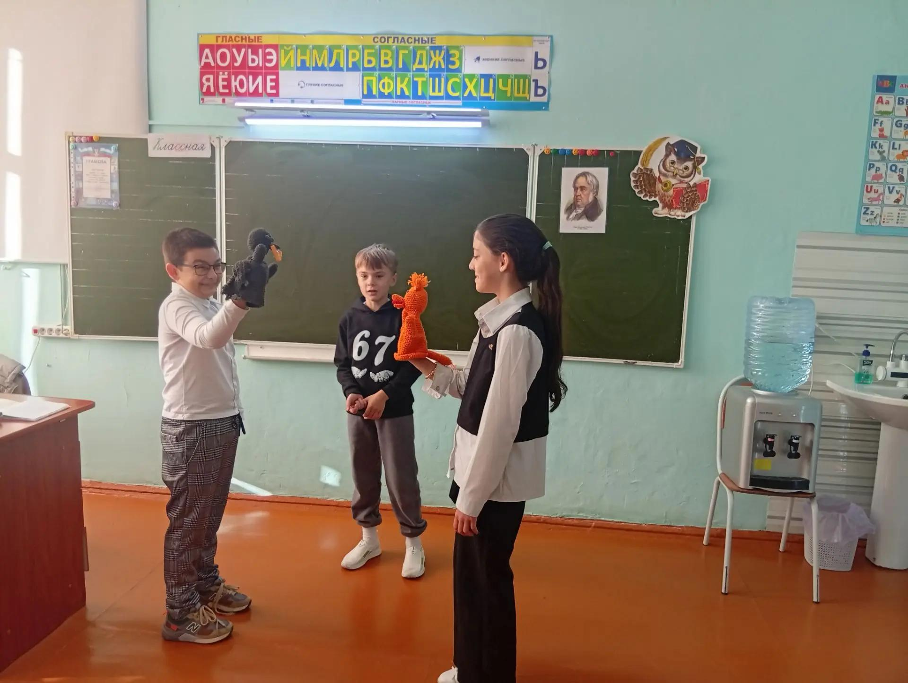
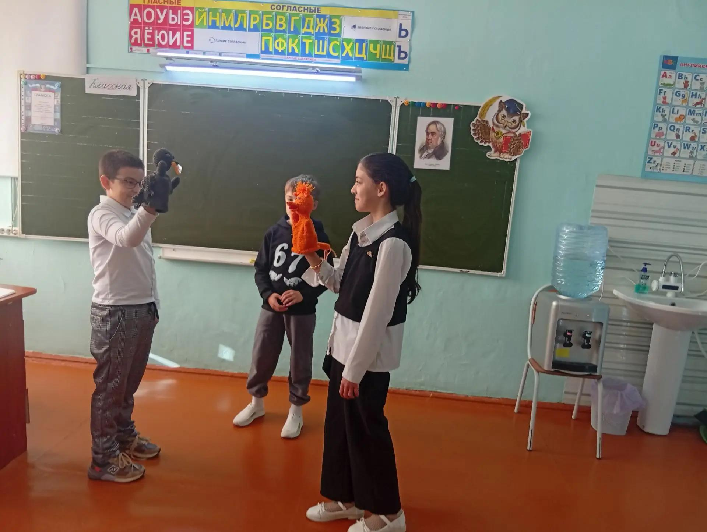
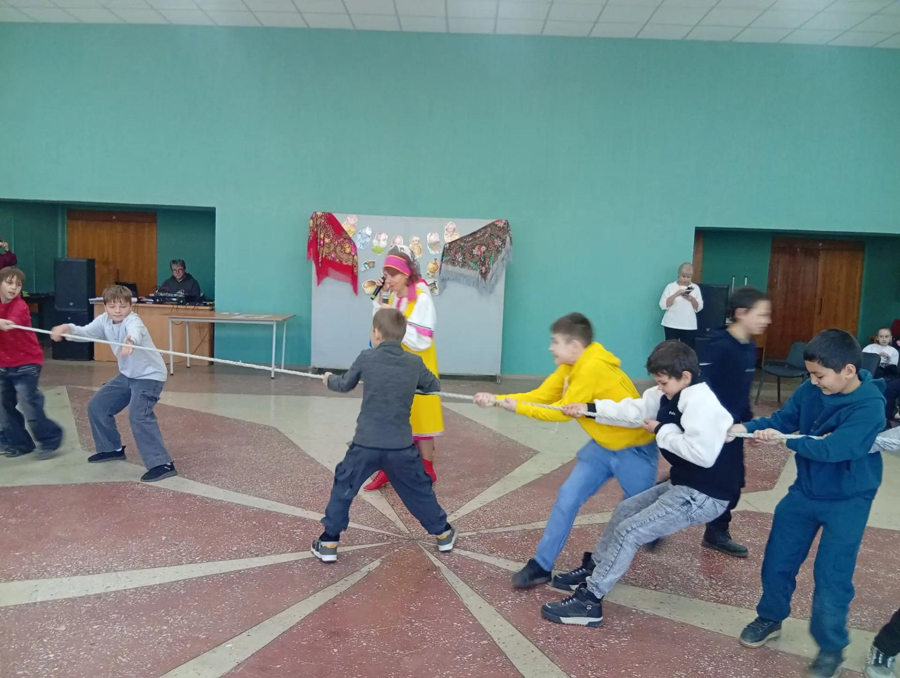
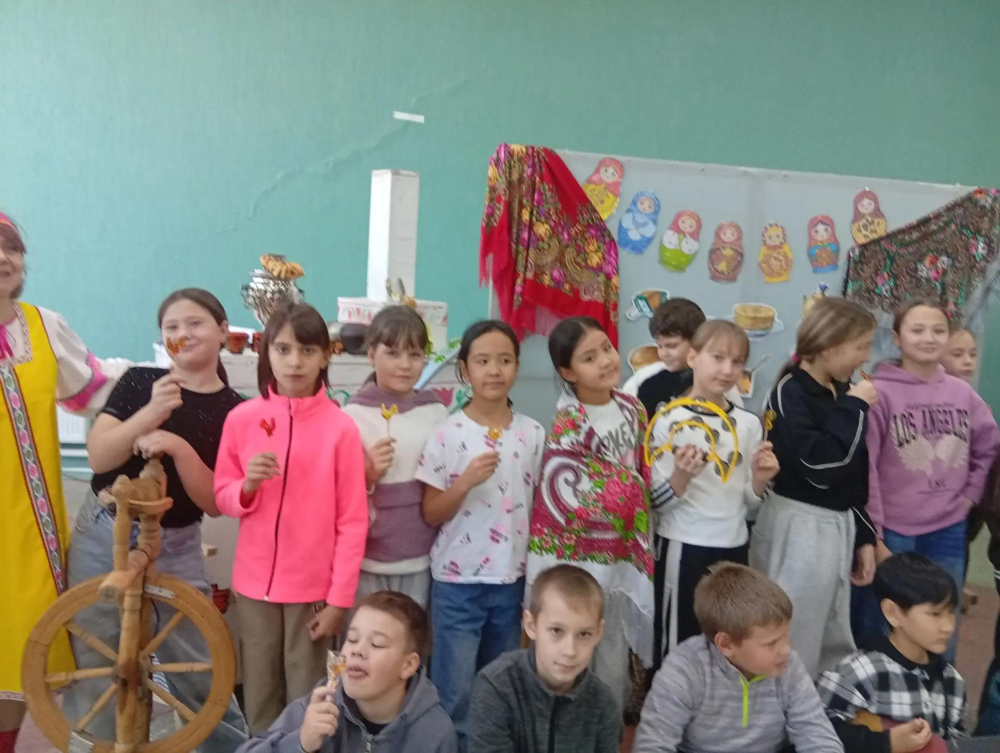
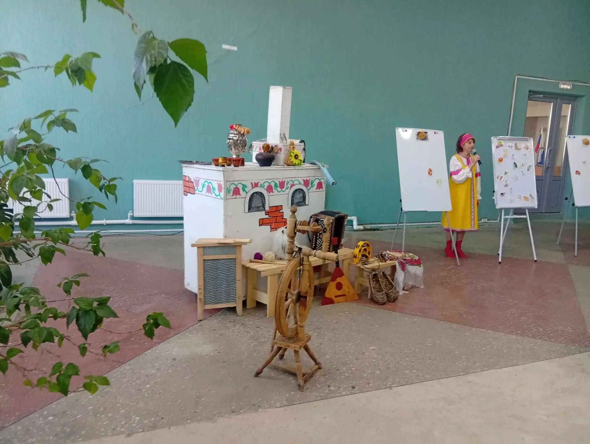

Блок 4. Культурный код поколения
Зачем первоклашке знать сказки Пушкина и былины? Работа с фольклорными и литературными истоками как фундамент нравственности
Культурный код поколения складывается из того, что ребёнок слышит, видит и переживает. Сегодня его складывают мультфильмы и ролики — и я не стану с этим спорить, но на уроке у меня есть шанс дать детям второй пласт: фольклор и классику, которые формируют нравственный фундамент.
ФГОС НОО прямо ставит задачу приобщения младших школьников к духовно-нравственным ценностям народов России. Федеральная рабочая программа по литературному чтению ведёт нас через былины, народные сказки, басни Крылова, сказки Пушкина. Но норматив — это каркас. Живое здание строится на уроке. Поэтому у нас сказки Пушкина — не «произведение для анализа», а событие: выразительное чтение по ролям, спор «а как бы поступил ты», куклы из театральной ширмы.


Работа с фольклором у нас устроена методически строго, хотя со стороны это похоже на игру. Былину мы сначала слушаем в исполнении педагога, затем дети находят в тексте слова-формулы («добрый молодец», «красна девица») и объясняют их смысл. Народную сказку мы пересказываем от лица разных героев — так ребёнок впервые проживает чужую позицию, а это и есть корень нравственного воспитания. Басню Крылова мы доводим до сцены: мораль, произнесённая своими устами, усваивается прочнее, чем разобранная по вопросам.




Я знаю точно: ребёнок, который пережил «Сказку о рыбаке и рыбке» сердцем, уже не потребует «новую игрушку прямо сейчас». Ребёнок, узнавший Илью Муромца, будет выбирать, каким быть сильным. Культурный код передаётся не лекциями — он передаётся голосом учителя, который впервые прочёл ребёнку строки, ставшие для него навсегда родными.
↑ наверх ← На главную